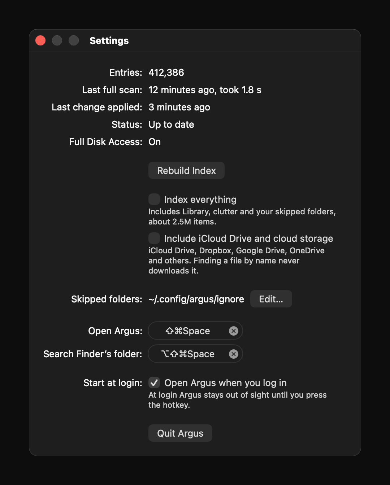

argus
A fast, light file and app launcher for macOS.
Press ⇧⌘Space, type a few letters, open anything.
brew tap jovanhartono/tap brew trust jovanhartono/tap brew install --cask jovanhartono/tap/argus
or download Argus.dmg · macOS 13+ · Apple and Intel
what it does
- Results while you type. Argus keeps its own index and keeps it current.
- Forgives typos:
desingfinds design.key,vscodefinds Visual Studio Code. - Apps and files in one list.
- ⌘T searches inside files; Return opens the line in VS Code, Cursor, Zed, Sublime Text or Xcode.
- Skips node_modules, build output and caches.
- Ranks the files you open often and recently higher.
- One small native app. No Electron, no background services.
a finder you can type into
Find a folder, then press → to walk into it and its subfolders, ← to come back out.
⌘I opens a details pane: where it lives, dates, what's inside, a preview of the file.
Tab narrows the search to the folder picked in the list.
keys
| ⇧⌘Space | show or hide |
| ↑ ↓ | move the selection |
| Return | open it |
| ⌘Return | show it in Finder |
| ⌘Y | Quick Look |
| ⌘I | details and preview |
| → ← | step into or out of a folder |
| ⌘T | search inside files |
| Tab | search inside the selected folder |
| Esc | step back, then hide |
| ⌘, | settings |
settings
